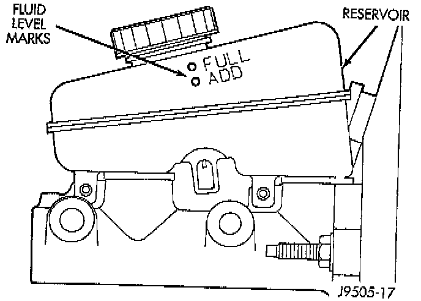

Brake Fluid: Service and Repair
BRAKE FLUID LEVELMaster Cylinder-Typical:

Always clean the master cylinder reservoir and cap before adding fluid. This will prevent dirt from falling in the reservoir and contaminating the brake fluid. The reservoir has a ADD and a FULL mark on the side fill to the FULL mark.